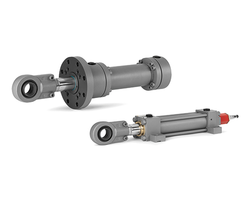
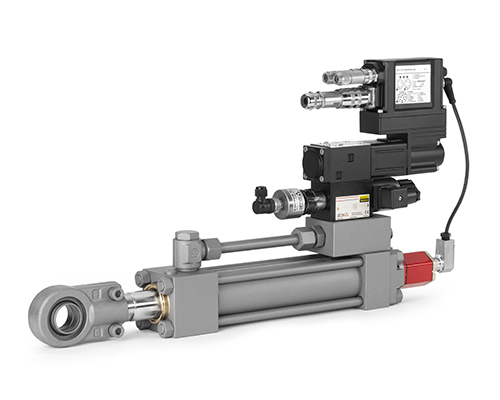

تقوم الأسطوانات الهيدروليكية بتحويل الضغط الهيدروليكي إلى قوة وحركة خطية.
توفر شركة إس آند إس للهيدروليك اسطوانات هيدروليكية عالية الجودة للتطبيقات الصناعية، الإنشائية، الزراعية والمتنقلة.

رؤوس مربعة أو دائرية مع قضبان ربط أو فلنجات مقابلة. أختام منخفضة الاحتكاك ومستشعر وضع مدمج للتحكم بالحركة عالي الدقة. تتضمن إصدارات الأمان محولات طاقة معتمدة وفقاً لمعيار IEC 61508 و/أو أنظمة قفل القضبان.
عرض الأنواع
وحدات ذكية ومدمجة تدمج الأسطوانات المؤازرة وصمامات التحكم في المحاور لإدارة دورة الحركة بالكامل.
عرض الأنواعالهاتف: +963933410300
البريد الإلكتروني: ayman.sbei@sbei-hydraulics.com